generate_data <- function(n, mu){
return(rnorm(n, mu, 5))
}
test_stat <- function(someData){
return(mean(someData))
}17 Monte Carlo Testing: Additional Examples
17.1 Type 1 Errors and the P-Value Distribution
I want to sample from \(N(\mu, 5^2)\)
Say I want to test \(H_0: \mu = 10\) vs \(H_A: \mu > 10\)
I can use the test statistic simply being \(\bar{X}\). Naturally if \(\bar{X}\) is high then I would consider that evidence against \(H_0\).
Here’s a function to generate sample data given \(\mu\) and a test statistic function.
Suppose we want to use a significance level of 7%. Why 7%? Why not!?! Imagine here is some data - note that this data is being generated from an alternative model (\(\mu=11\)).
set.seed(1)
myData <- rnorm(25, 11, 5)
myData [1] 7.86773095 11.91821662 6.82185694 18.97640401 12.64753886 6.89765808
[7] 13.43714526 14.69162353 13.87890676 9.47305806 18.55890584 12.94921618
[13] 7.89379710 -0.07349944 16.62465459 10.77533195 10.91904868 15.71918105
[19] 15.10610598 13.96950661 15.59488686 14.91068150 11.37282492 1.05324152
[25] 14.09912874Let’s generate a test statistic distribution under the null hypothesis. What are typical values of \(\bar{X}\) when the null hypothesis is true? If you remember the central limit theorem it will come as no surprise that this distribution is \(N(10, 5^2/25)\)
NMC <- 10000
t.sim <- replicate(NMC, test_stat(generate_data(25, 10)))
hist(t.sim)
mean(t.sim);var(t.sim)[1] 9.994043[1] 0.9879012We want to pick a rejection threshold (a critical value) \(t_\alpha\) designed to achieve a significance level (type 1 error rate) of .07. If \(\bar{X} \geq t_\alpha\) we reject \(H_0\), and this should occur 7% of the time when \(H_0\) is true. Rather than using the theoretical normal distribution for \(\bar{X}\), we’ll use the simulated test statistics to approximate the threshold.
t.crit <- quantile(t.sim, .93)
#verify
mean(t.sim >= t.crit)[1] 0.07Let’s just make sure that if the null hypothesis is true that we end up rejecting 7%
result <- FALSE
for(i in 1:NMC){
nullData <- generate_data(25, 10)
result[i] <- test_stat(nullData) >= t.crit
# result will be TRUE if the test stat is beyond the critical
# value, ie. we reject the null
#False otherwise
}
mean(result)[1] 0.0732I’m curious about the p-values you get from this test. I mean - if the null hypothesis is true, what p-values would you expect to get? Let’s repeat with the null hypothesis, and just record p-values.
To put it another way - Because \(T(D_0)\) is a random variable, \(Pr[T(D) > T(d_0)]\) is a random variable as well; the \(p\)-value under the null hypothesis can be thought of as a random variable and thus it has a distribution. What is the shape of this distribution? Let’s use Monte Carlo to estimate it.
p.val <- 0
for(i in 1:NMC){
nullData <- generate_data(25, 10)
p.val[i] <- mean(t.sim >= test_stat(nullData))
}
hist(p.val)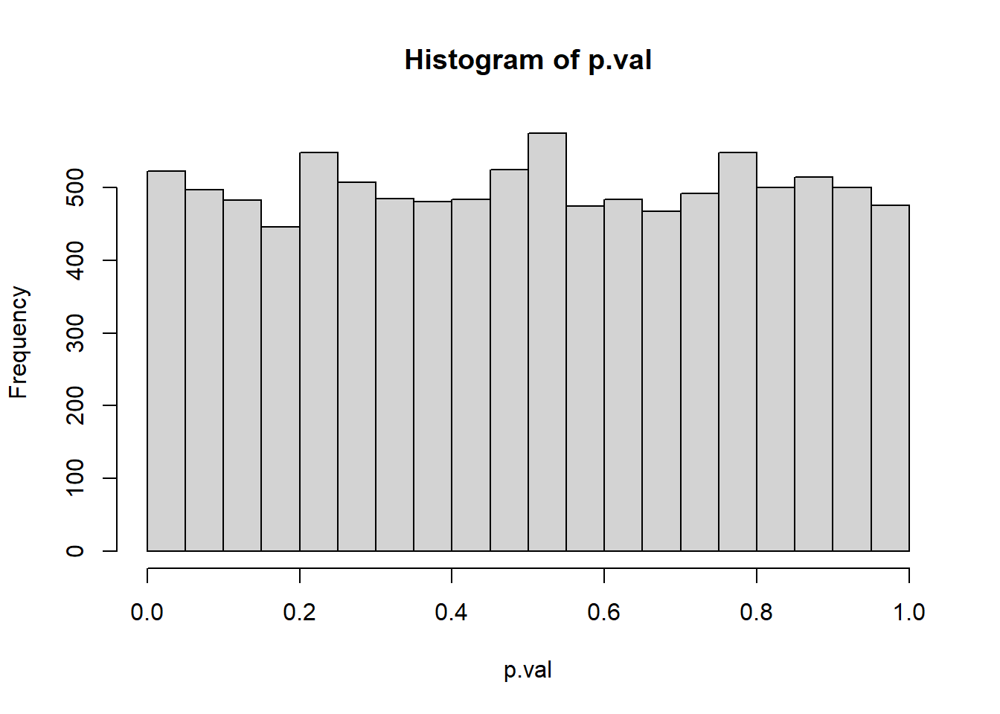
If the null hypothesis is true, and we get data and calculate a p-value, the p-value will be uniformly distributed according to a uniform(0,1). This turns out to be the case for ANY hypothesis test. It’s a little less precise when your test statistic is a discrete r.v., but it is more or less going to be the case.
What about the distribution of p-values if the mean = 11 (i.e. the null is false) - this is the model from which we got our initial data.
Reminder: \(H_0: \mu=10\) and \(H_A: \mu > 10\)
p.val <- 0
for(i in 1:NMC){
altData <- generate_data(25, 11)
p.val[i] <- mean(t.sim >= test_stat(altData))
}
hist(p.val)
mean(p.val <= 0.07)[1] 0.3277mean(p.val >0.07)[1] 0.6723So it seems if the data was drawn from a normal distribution with a mean of 11, we have a 32.77% probability of getting “strong evidence” to reject H_0. That’s the power of this test.
17.2 Achieving exact alpha with a discrete test statistic distribution
Going back to the example from lecture, suppose we want to achieve an exact type 1 error rate of 2.5%. We’re flipping a coin and we want to know what rejection rule we should use for the lower-bound on the number of heads - to conclude that the coin is not fair.
To remind you - we are flipping a coin 200 times, we have to come up with a rule such that if the flips are producing too low of heads, we reject the null hypothesis (and we would do something similar for the upper tail).
The goal is to find some rejection rule for low X that will reject 2.5% of the time for a fair coin.
#P (X <= 85) for X~Binom(200, .5)
pbinom(85, 200, .5)[1] 0.0200186#P (X <= 86) for X~Binom(200, .5)
pbinom(86, 200, .5)[1] 0.02798287#P(X = 86)
dbinom(86, 200, .5)[1] 0.007964274\[P(X \leq 85) = 0.0200186\]
\[P(X \leq 86) = 0.02798287\]
\[P(X=86) = .00796\]
The idea is we will reject always when X <= 85, sometimes when X = 86, and never when X > 86. What do we want for the sometimes? We want \[P(X \leq 85) + P(reject \cap X=86) = 0.025\] In other words:
\[P(reject \cap X=86) = 0.025-P(X \leq 85)\] Expanding the left hand side
\[P(reject | X=86)\cdot P(X=86) = 0.025-P(X \leq 85)\] Divide both sides by \(P(X=86)\) \[P(reject | X=86) = \dfrac{0.025-P(X \leq 85)}{P(X=86)}\]
#We look at the probability under H0 that we get 86 heads
P.reject.86 <- (.025 - pbinom(85, 200, .5) )/dbinom(86, 200, .5)
P.reject.86[1] 0.6254687So if we get 86 heads, we will reject 62.5% of the time. That’s the idea.
hack_decision_rule <- function(T){
#T is the number of heads
if(T <= 85){ return (TRUE)} #always reject if T <= 85
else if(T==86) {return(rbinom(1, 1, P.reject.86))}
else {return (FALSE)}
}
#verify that we actually are able to achieve a precise 2.5% type 1 error rate using this "hack" rule.
trials <- rbinom(100000, 200, .5)
reject <- FALSE
for(i in 1:100000){
reject[i] <- hack_decision_rule(trials[i])
}
mean(reject)[1] 0.02499There are two other ways that we could attempt (that come to my mind) to achieve an exact \(\alpha\) with a discrete test statistic distribution.
- If \(X \leq 86\) reject \(p\) of the time
- Always reject 2.5% of the time.
Both of these will attain an \(\alpha\) of 0.025, but they are not as powerful (probably). Let’s consider different probabilities from 0 to .5 and compare the powers We’re only refining the rejection rule for the lower tail, so we don’t need to look at the upper tail right now.
set.seed(1)
rule1.p <- 0.025/pbinom(86,200, .5)
hack_decision_rule1 <- function(T){
if(T <= 86){
return(runif(1) < rule1.p)
} else {
return(FALSE)
}
}
hack_decision_rule2 <- function(T){
return(runif(1) < 0.025)
}
if(file.exists("discrete_exact_alpha.rds")){
#So this knits faster- load the results if they exist.
discreteRR <- readRDS("discrete_exact_alpha.rds")
} else {
pseq <- seq(0,.5,.01)
rr_0 <- rep(0,length(pseq))
rr_1 <- rr_0
rr_2 <- rr_0
NMC <- 5000
for(j in 1:length(pseq)){
p <- pseq[j]
for(i in 1:NMC){
#generate data
nheads <- rbinom(1, 200, p)
rr_0[j] <- rr_0[j] + hack_decision_rule(nheads)
rr_1[j] <- rr_1[j] + hack_decision_rule1(nheads)
rr_2[j] <- rr_2[j] + hack_decision_rule2(nheads)
}
}
rr_0 <- rr_0 / NMC
rr_1 <- rr_1 / NMC
rr_2 <- rr_2 / NMC
discreteRR <- data.frame(pseq, rr_0, rr_1, rr_2)
saveRDS(discreteRR, "discrete_exact_alpha.rds")
}
plot(discreteRR$rr_0~discreteRR$pseq, type="l", ylab="rejection rate", xlab="Prob of H", main="Power Comparison of Hack Rejection Rules", data=discreteRR)
abline(h=0.025, col="red")
lines(x=discreteRR$pseq, y=discreteRR$rr_1, col="blue")
lines(x=discreteRR$pseq, y=discreteRR$rr_2, col="orange")
legend(x=0, y=.6, legend=c("Hack rule", "reject sometimes if T<=86", "reject sometimes"), col=c("black","blue","orange"), lwd=1)
Compare their levels:
discreteRR$rr_0[51][1] 0.0256discreteRR$rr_1[51][1] 0.0252discreteRR$rr_2[51][1] 0.026217.3 Example: Comparing Consistency
Student A and Student B are in the same class. We are curious to know about their academic performance, in particular their consistency in grade performance.
A.grades <- c(83.4,91.4,83.0,77.2,81.9,76.8,82.4,89.0,82.0,74.9,77.6,78.7,79.1,77.8,80.3)
B.grades <- c(75.9,66.4,98.1,83.0,72.4,70.6,67.1,73.0,89.1,87.0,83.9,63.7,88.6,90.0,75.5,86.5,77.5)
A.grades <- A.grades - mean(A.grades)
B.grades <- B.grades - mean(B.grades)
boxplot(A.grades, B.grades, horizontal=TRUE)
The question is this: are the two students equally consistent in their grades? Let’s think about consistency in terms of variance
Let’s fill in the following code:
#Takes in two data vectors, compares them in a meaningful way and returns a statistic that is useful to compare consistency.
testStat <- function(dataA, dataB){
return(var(dataA)-var(dataB))
}
#This function takes in two vector, combines them, shuffles,
#And splits them
#Then calculates a test statistic
permuteAndCompute <- function(dataA, dataB){
combinedData <- c(dataA, dataB)
shuffledData<- sample(combinedData)
simA <- shuffledData[1:length(dataA)]
simB <- shuffledData[-(1:length(dataA))] #I use negative index
return(testStat(simA, simB))
}
#Takes in the two data sets and a number of monte carlo runs. It will perform the MC simulation NMC times and it will return a distribution of test statistics.
mcDist <- function(dataA, dataB, MNC){
results <- 0
for(i in 1:NMC){
results[i] <- permuteAndCompute(dataA, dataB)
}
return(results)
}obsTestStat <- testStat(A.grades, B.grades)
mcSamplingDistribution <- mcDist(A.grades, B.grades, 10000)
hist(mcSamplingDistribution)
abline(v=obsTestStat)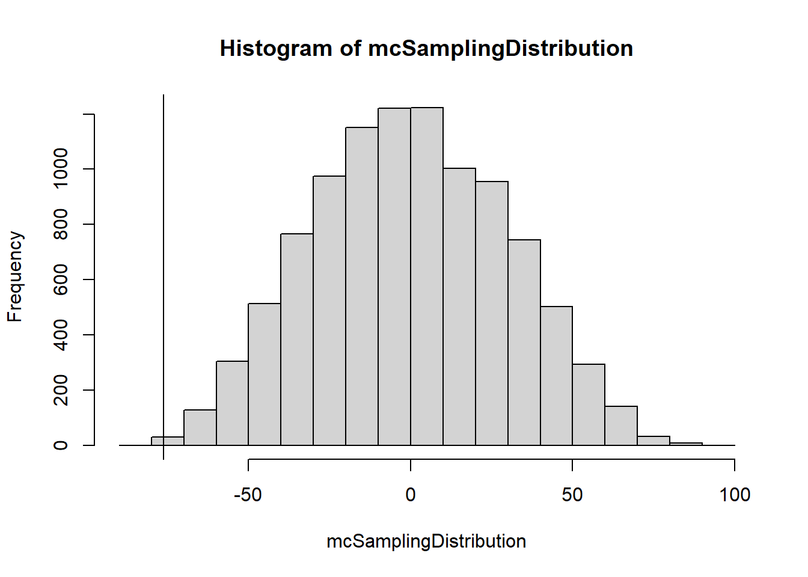
obsTestStat[1] -76.26533mean(mcSamplingDistribution >= obsTestStat)[1] 0.9993mean(mcSamplingDistribution <= obsTestStat)[1] 7e-04We have about .1% in the left-tail, more extreme than our observed test statitic. However the question we were investigating is “Are they equally consistent or not”
So - if the test statisitc was very positive (+75 or so) we would also consider that evidence for the alternative.
This is a two-sided test; we need to calculate probability from both sides of the distribution. What we want to do then is to follow this model:
- calculate the probability <= obs. test stat
- calculate the probability >= obs. test stat
- take the smaller of the two
- Double it
#This is my formula for a 2-tailed p-value
2*min(mean(mcSamplingDistribution>=obsTestStat),
mean(mcSamplingDistribution<=obsTestStat))[1] 0.0014If this was a symmetric distribution, this would be the same as:
mean(mcSamplingDistribution>= abs(obsTestStat)) + mean(mcSamplingDistribution<= -abs(obsTestStat))[1] 0.0021Let’s suppose we used some other measure of “difference of consistency” For example, we could take the ratio of the variances.
#redefine the test statistic
testStat <- function(dataA, dataB){
return(var(dataA)/var(dataB))
}
obsTestStat <- testStat(A.grades, B.grades)
mcSamplingDistribution <- mcDist(A.grades, B.grades, 10000)
hist(mcSamplingDistribution, breaks=50)
abline(v=obsTestStat)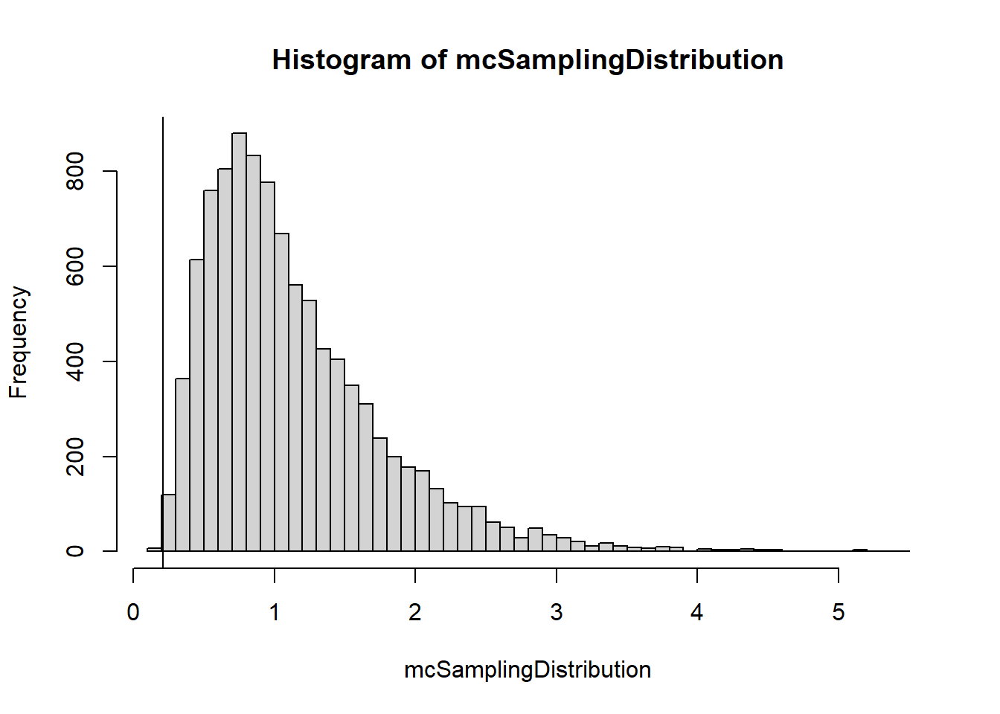
2*min(mean(mcSamplingDistribution >= obsTestStat),
mean(mcSamplingDistribution <= obsTestStat))[1] 0.00217.4 Coin Flips
Below are two sequences of 300 “coin flips” (H for heads, T for tails). One of these is a true sequence of 300 independent flips of a fair coin. The other was generated by a person typing out H’s and T’s and trying to seem random. Which sequence is truly composed of coin flips?
Sequence 1:
TTHHTHTTHTTTHTTTHTTTHTTHTHHTHHTHTHHTTTHHTHTHTTHTHH TTHTHHTHTTTHHTTHHTTHHHTHHTHTTHTHTTHHTHHHTTHTHTTTHH TTHTHTHTHTHTTHTHTHHHTTHTHTHHTHHHTHTHTTHTTHHTHTHTHT THHTTHTHTTHHHTHTHTHTTHTTHHTTHTHHTHHHTTHHTHTTHTHTHT HTHTHTHHHTHTHTHTHHTHHTHTHTTHTTTHHTHTTTHTHHTHHHHTTT HHTHTHTHTHHHTTHHTHTTTHTHHTHTHTHHTHTTHTTHTHHTHTHTTT
Sequence 2:
HTHHHTHTTHHTTTTTTTTHHHTTTHHTTTTHHTTHHHTTHTHTTTTTTH THTTTTHHHHTHTHTTHTTTHTTHTTTTHTHHTHHHHTTTTTHHHHTHHH TTTTHTHTTHHHHTHHHHHHHHTTHHTHHTHHHHHHHTTHTHTTTHHTTT THTHHTTHTTHTHTHTTHHHHHTTHTTTHTHTHHTTTTHTTTTTHHTHTH HHHTTTTHTHHHTHHTHTHTHTHHHTHTTHHHTHHHHHHTHHHTHTTTHH HTTTHHTHTTHHTHHHTHTTHTTHTTTHHTHTHTTTTHTHTHTTHTHTHT
Useful functions: flips <- strsplit("HHTHTHHTHTHHHT","") with(rle(flips[[1]]), lengths[values=="H"])
seq1 ="TTHHTHTTHTTTHTTTHTTTHTTHTHHTHHTHTHHTTTHHTHTHTTHTHHTTHTHHTHTTTHHTTHHTTHHHTHHTHTTHTHTTHHTHHHTTHTHTTTHHTTHTHTHTHTHTTHTHTHHHTTHTHTHHTHHHTHTHTTHTTHHTHTHTHT THHTTHTHTTHHHTHTHTHTTHTTHHTTHTHHTHHHTTHHTHTTHTHTHTHTHTHTHHHTHTHTHTHHTHHTHTHTTHTTTHHTHTTTHTHHTHHHHTTTHHTHTHTHTHHHTTHHTHTTTHTHHTHTHTHHTHTTHTTHTHHTHTHTTT"
seq2 = "HTHHHTHTTHHTTTTTTTTHHHTTTHHTTTTHHTTHHHTTHTHTTTTTTHTHTTTTHHHHTHTHTTHTTTHTTHTTTTHTHHTHHHHTTTTTHHHHTHHHTTTTHTHTTHHHHTHHHHHHHHTTHHTHHTHHHHHHHTTHTHTTTHHTTTTHTHHTTHTTHTHTHTTHHHHHTTHTTTHTHTHHTTTTHTTTTTHHTHTHHHHTTTTHTHHHTHHTHTHTHTHHHTHTTHHHTHHHHHHTHHHTHTTTHH HTTTHHTHTTHHTHHHTHTTHTTHTTTHHTHTHTTTTHTHTHTTHTHTHT"
flips1 <- strsplit(seq1,"")
H.run.lengths1 <- with(rle(flips1[[1]]), lengths[values=="H"])
table(H.run.lengths1)H.run.lengths1
1 2 3 4
66 27 8 1 flips2 <- strsplit(seq2,"")
H.run.lengths2 <- with(rle(flips2[[1]]), lengths[values=="H"])
table(H.run.lengths2)H.run.lengths2
1 2 3 4 5 6 7 8
45 15 9 5 1 1 1 1 What if we use maximum run length as a test statistic?
t.dist <- 0 #empty vector for our simulated distribution of test statistics
MCN <- 10000
n <- 300
for(i in 1:MCN){
flips <- sample(c("H","T"), 300, replace=TRUE)
H.run.lengths <- with(rle(flips), lengths[values=="H"])
t.dist[i] <- max(H.run.lengths)
}
hist(t.dist)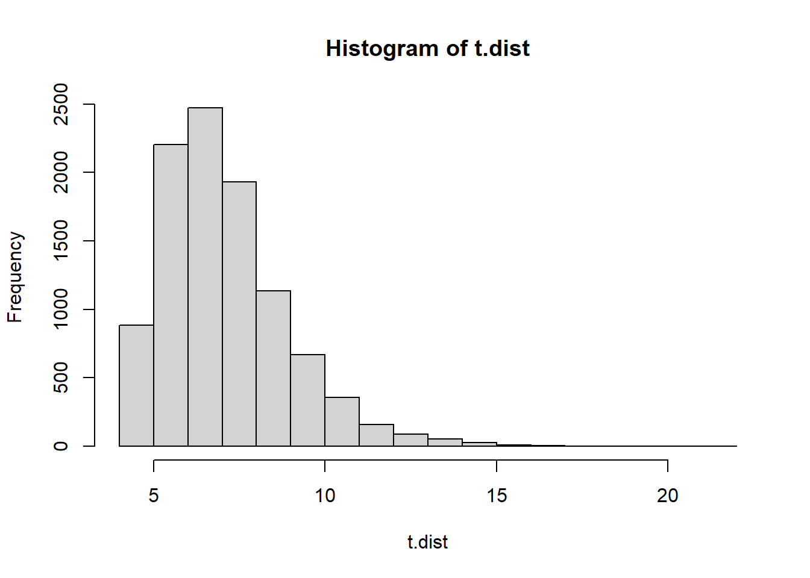
What are the two test statistics? We would use a 2-tailed p-value. We would consider a sequence of Hs and Ts to be weird if the max run length was too long or too short.
(t1 <- max(H.run.lengths1))[1] 42*(min(mean(t.dist <= t1),mean(t.dist >= t1)))[1] 0.013(t2 <- max(H.run.lengths2))[1] 82*(min(mean(t.dist <= t2),mean(t.dist >= t2)))[1] 0.8762It probably comes as no surprise that the first sequence of Hs and Ts is suspicious. It does not contain enough long runs of Hs- when flips are done randomly you tend to get at least some much longer runs.
We could repeat this with the “average” run length as well.
t.dist <- 0 #empty vector for our simulated distribution of test statistics
MCN <- 10000
n <- 300
for(i in 1:MCN){
flips <- sample(c("H","T"), 300, replace=TRUE)
H.run.lengths <- with(rle(flips), lengths[values=="H"])
t.dist[i] <- mean(H.run.lengths)
}
hist(t.dist)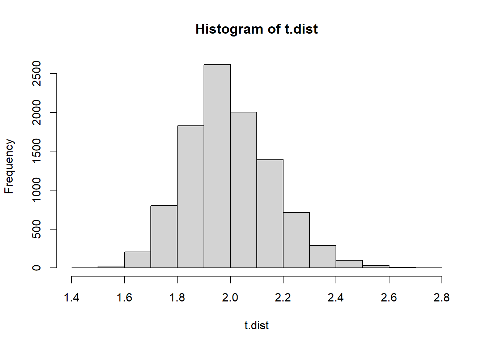
(t1 <- mean(H.run.lengths1))[1] 1.450982*(min(mean(t.dist <= t1),mean(t.dist >= t1)))[1] 0(t2 <- mean(H.run.lengths2))[1] 1.8974362*(min(mean(t.dist <= t2),mean(t.dist >= t2)))[1] 0.5612The average run length of 1.45 would virtually never happen if a coin was actually flipped 300 times. That’s conclusive evidence that the first sequence was made up by a human.
What are some other test statistics that could have worked?
17.5 Example: hot hands
For the next example, let’s do something slightly more complicated.
A certain professional basketball player believes he has “hot hands” when shooting 3-point shots (i.e. if he makes a shot, he’s more likely to also make the next shot). His friend doesn’t believe him, so they make a wager and hire you, a statistician, to settle the bet.
As a sample, you observe the next morning as the player takes the same 3-point shot 200 times in a row (assume he is well rested, in good physical shape, and doesn’t feel significantly more tired after the experiment), so his level of mental focus doesn’t change during the experiment). You obtain the following results, where Y denotes a success and N denotes a miss:
YNNNNYYNNNYNNNYYYNNNNNYNNNNNNNNNYNNNNNYYNYYNNNYNNNNYNNYYYYNNYY
NNNNNNNNNNNNNNNYYYNNNYYYYNNNNNYNYYNNNNYNNNNNNYNNNYNNYNNNNNYNYY
YNNYYYNYNNNNYNNNNNNNYYNNYYNNNNNNYNNNYNNNNNNNNYNNNYNNNNNYYNNNNN
NYYYYYYNYYNNYNThe hypotheses being tested are: \(H_0:\) there is no hot hand effect - shots are independent \(H_A:\) there is some dependency between shots
Note that the existence of a “hot hands” effect means the shots are not independent. Also note that there’s a third possibility: that the player is more likely to “choke” and miss the next shot if he scored the previous one (e.g. maybe scoring a shot makes him feel more nervous because he feels like he’s under pressure).
17.5.1 Attempt 1: run length
Since the existence of a hot hands effect tends to increase the run lengths of Ys compared to if the shots were independent, we can use the longest run length as a way of comparing independence vs hot hands (note if the player is a choker, they will tend to have shorter runs of Ys than if they were independent, so you can simply ignore this case for now and compare hot hands v. independence for simplicity).
Now, how exactly do you compare these two situations and determine which is a better fit for the data?
One thing that’s worth noting is that if a sequence of repeated experiments is independent, then it shouldn’t matter what order the results are in. This should be fairly easy to understand and agree with.
Let’s assume that the throws are totally independent. Recall we also assume he doesn’t get tired so his baseline shot-making ability doesn’t change over the course of the experiment. Therefore, we should be able to (under these assumptions) arbitrarily reorder his shots without affecting any statistical properties of his shot sequence. So let’s do that!
We begin by parsing the throws into a vector of Y and N.
# the sequence of throws is broken up into 4 chunks for readability, then
# paste0 is used to merge them into a single sequence, then
# strplit("YN...N",split="") is used to split the string at every "", so
# we get a vector of each character, and finally
# [[1]] is used to get the vector itself (strsplit actually outputs a list
# with the vector as the first element; [[1]] removes the list wrapper)
#
# for more info about the strsplit function, see
# https://www.journaldev.com/43001/strsplit-function-in-r
throws = strsplit(
paste0("YNNNNYYNNNYNNNYYYNNNNNYNNNNNNNNNYNNNNNYYNYYNNNYNNN",
"NYNNYYYYNNYYNNNNNNNNNNNNNNNYYYNNNYYYYNNNNNYNYYNNNN",
"YNNNNNNYNNNYNNYNNNNNYNYYYNNYYYNYNNNNYNNNNNNNYYNNYY",
"NNNNNNYNNNYNNNNNNNNYNNNYNNNNNYYNNNNNNYYYYYYNYYNNYN"), split="")[[1]]
throws [1] "Y" "N" "N" "N" "N" "Y" "Y" "N" "N" "N" "Y" "N" "N" "N" "Y" "Y" "Y" "N"
[19] "N" "N" "N" "N" "Y" "N" "N" "N" "N" "N" "N" "N" "N" "N" "Y" "N" "N" "N"
[37] "N" "N" "Y" "Y" "N" "Y" "Y" "N" "N" "N" "Y" "N" "N" "N" "N" "Y" "N" "N"
[55] "Y" "Y" "Y" "Y" "N" "N" "Y" "Y" "N" "N" "N" "N" "N" "N" "N" "N" "N" "N"
[73] "N" "N" "N" "N" "N" "Y" "Y" "Y" "N" "N" "N" "Y" "Y" "Y" "Y" "N" "N" "N"
[91] "N" "N" "Y" "N" "Y" "Y" "N" "N" "N" "N" "Y" "N" "N" "N" "N" "N" "N" "Y"
[109] "N" "N" "N" "Y" "N" "N" "Y" "N" "N" "N" "N" "N" "Y" "N" "Y" "Y" "Y" "N"
[127] "N" "Y" "Y" "Y" "N" "Y" "N" "N" "N" "N" "Y" "N" "N" "N" "N" "N" "N" "N"
[145] "Y" "Y" "N" "N" "Y" "Y" "N" "N" "N" "N" "N" "N" "Y" "N" "N" "N" "Y" "N"
[163] "N" "N" "N" "N" "N" "N" "N" "Y" "N" "N" "N" "Y" "N" "N" "N" "N" "N" "Y"
[181] "Y" "N" "N" "N" "N" "N" "N" "Y" "Y" "Y" "Y" "Y" "Y" "N" "Y" "Y" "N" "N"
[199] "Y" "N"Next, we write a function to get the longest run of Ys in the throw sequence. Here we use a convenient function called rle( ) which is short for run length encoding, which turns our sequence of throws into sequences of runs (e.g. YNNNNYYNNNY becomes something like “1 Y, 4 Ns, 2 Ys, 3 Ns, and 1 Y”). We can then simply take the longest of the Y runs.
longestRun = function(x, target = 'Y'){
max(0, with(rle(x), lengths[values==target]))
}
longestRun(throws)[1] 6Now, we randomly shuffle the sequence of throws many times and see what the longest Y runs look like for these shuffled sequences.
# set number of reps to use
MCN = 10000
# create vector to save results in
mc.runs = rep(0,MCN)
# for each rep, randomize sequence and find longest run of Y
for(i in 1:MCN){
mc.runs[i] = longestRun(sample(throws))
}options(max.print=50)
mc.runs [1] 3 3 4 4 3 4 4 4 5 4 4 5 4 4 4 4 4 4 6 7 5 6 3 6 4 5 7 4 4 4 4 5 3 5 5 5 5 4
[39] 3 5 4 5 3 3 4 7 4 4 4 5
[ reached getOption("max.print") -- omitted 9950 entries ]barplot(table(mc.runs))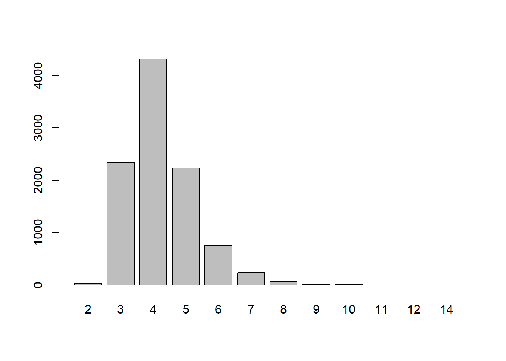
For a two tailed test - if you would reject the null hypothesis if the test statistic lived in either the upper or the lower tail of the distribution, a general rule to use is to take the proportion >= observed and <= observed, whichever one is smaller, double that.
mean(mc.runs >= 6) * 2 #because it's a 2 tailed test[1] 0.2164Compared to other shuffled sequences, our run length doesn’t seem that unlikely. Therefore, this method seems inconclusive.
Can we find an even better “statistic” to use?
17.5.2 Attempt 2: running odds ratio
Consider every pair of consecutive throws and make a table of the outcomes. For example, the first 8 throws in the sequence are YNNNNYYN. Breaking this into consecutive pairs, we have YN, NN, NN, NN, NY, YY, YN. This gives the table:
| NN | NY | YN | YY |
|---|---|---|---|
| 3 | 1 | 2 | 1 |
Suppose we do this for the entire sequence of 200 throws (note this gives you 199 pairs). If we divide the number of NY by the number of NN, we get an estimate for how much more likely he is to make the next shot assuming he missed his last shot.
Similarly, we can divide the number of YY by the number of YN to get an estimate for how much more likely he is to make the next shot assuming he scored his last shot.
Now, note that if the “hot hands” effect really exists in the data, then YY/YN should be larger than NY/NN in a large enough sample. We use this fact to define the following quantity:
\[ R=\frac{(\text{# of YY})/(\text{# of YN})}{(\text{# of NY})/(\text{# of NN})} \]
The ratio \(R\) represents, in some sense, how much more likely the player is to make the next shot if he made the previous shot vs if he didn’t make the previous shot (note the vs). This is exactly what we’re trying to investigate!
If there is a “hot hands” effect, the numerator should be greater than the denominator and we should have \(R>1\). If the throws are independent and do not affect each other then in theory we should have \(R=1\). If the player is actually a choker (i.e. he is more likely to miss after a successful shot), then we should have \(R<1\). (Side note: this is basically an odds ratio).
Now, we can use the same general method as the first attempt. If we assume his throws are independent and his shot probability doesn’t change significantly during the experiment, then we can randomly shuffle his throws and no properties should change. So let’s do that!
First, I wrote a function to split the sequence of throws into consecutive pairs and then tabulates them.
# define function for tabulating consecutive pairs
tableOfPairs = function(x) {n=length(x);Rfast::Table(paste(x[1:(n-1)],x[2:n],sep=""))}
# test function for correct output
tableOfPairs(strsplit("YNNNNYYN",split="")[[1]])NN NY YN YY
3 1 2 1 # run function on original sequence of throws
tableOfPairs(throws) NN NY YN YY
102 34 35 28 Next, I wrote a function that takes the above table as an input and returns the ratio R as defined above.
ratioFromTable = function(tb) setNames((tb["YY"]/tb["YN"])/(tb["NY"]/tb["NN"]),"R")
# run on our data
ratioFromTable(tableOfPairs(throws)) R
2.4 # we can check this is correct by manually computing it
(28/35)/(34/102)[1] 2.4Now we just need to shuffle the sequence and see what this ratio looks like for other sequences.
# set number of reps to use
N = 10000
# create another vector to save results in
mc.ratios = rep(NA,N)
# for each rep, randomize sequence and find ratio R
#for(i in 1:N){
# mc.ratios[i] = ratioFromTable(tableOfPairs(sample(throws)))
#}
# alternatively, use replicate
mc.ratios = replicate(N,ratioFromTable(tableOfPairs(sample(throws))))options(max.print=50)
round(mc.ratios,2) R R R R R R R R R R R R R R R R
1.04 1.53 0.97 0.51 0.90 1.01 0.39 0.86 0.90 0.97 1.04 1.24 0.84 0.84 0.64 0.54
R R R R R R R R R R R R R R R R
1.59 0.51 1.12 1.95 0.57 1.38 0.67 0.57 1.59 0.93 1.43 1.08 0.72 0.72 0.77 1.01
R R R R R R R R R R R R R R R R
0.90 0.86 0.40 0.81 0.64 0.90 0.67 1.16 1.38 1.24 0.25 0.67 0.81 0.84 1.65 0.81
R R
0.48 0.90
[ reached getOption("max.print") -- omitted 9950 entries ]hist(mc.ratios, breaks=20)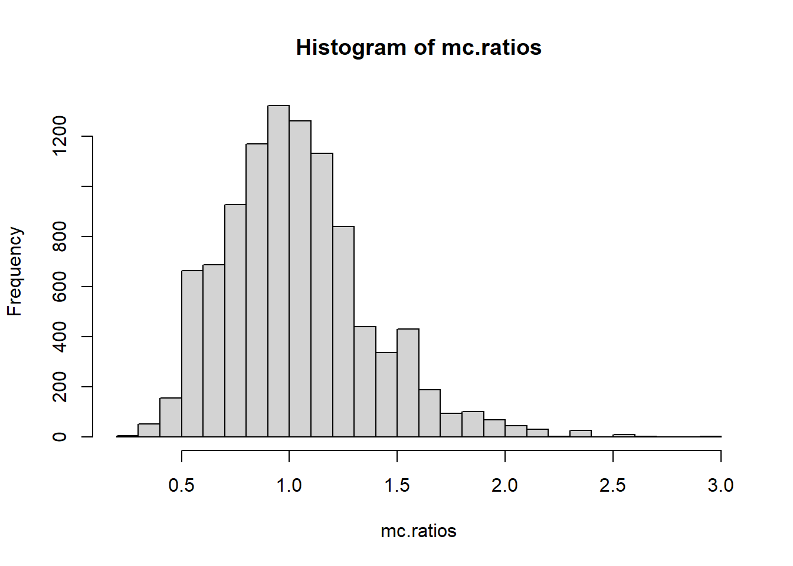
mean(mc.ratios>=ratioFromTable(tableOfPairs(throws)))[1] 0.002Now we can see our original ratio of \(R=2.4\) seems extremely unlikely! In particular, most of the shuffled statistics are centered around 1 (which is what we expect, since we established \(R=1\) for independent sequences).
This method (which is a little more refined than the simpler run length method) appears to show that our original sequence isn’t well explained by the throws being independent. Since \(R=2.4\gg1\) and this result appears unlikely to happen under independence, we may conclude the player does actually have hot hands.
17.6 Permutation test: Drug Trials (Extended)
Apologies- this part of the document is a little messy, I have to remove duplicate work!
The results from a medical trial; larger numbers are “better” We want to know if there is evidence that the drug (treatment group) performs on average better than control.
control <- c(-0.10, -0.55, 1.24, -0.97, -0.76, 0.21,-0.27, -1.02, 0.58, 1.67, -1.07, 0.17, 1.45, 0.34, 1.15, 0.18, -0.97, 0.43, -1.39, -2.76 );
treatment <- c( 0.54, 0.36, 0.59, -0.57, 0.53, -0.78, -0.44, -0.98, 1.31, 0.50, 0.57, 0.49, -0.96, 2.41, 0.85, 1.93, 0.95, 1.45, 1.61, -1.16 );
boxplot(treatment, control)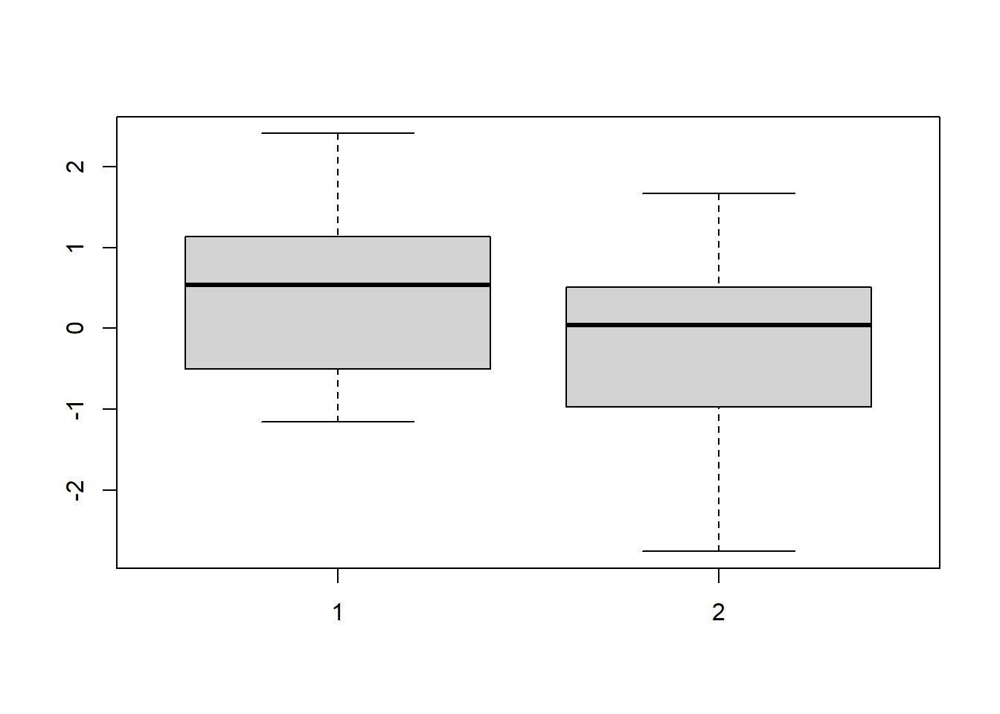
Think about the logic of how a monte carlo test would work. We need to come up with a null model corresponding with the null hypothesis - but we really should be clear about the hypothesis that we’re testing.
Claim (alt hypothesis) - the drug works. Null hypothesis - the drug does not work.
The null model implies - these 40 values just happened to be partitioned randomly into control group and treatment group.
So in a Monte Carlo simulation, we can take these 40 values, shuffle them around, and re-partition them into “control” and “Treatment”
The second important decision we have to make: on each simulation of the data we need to calculate some statistic or number - some function of the data - that captures the… unusualness of it somehow. Something that would lend evidence towards the alt. hypothesis.
The alt hypothesis (“the drug works”) - evidence in support of this would be: the mean for the treatment group > the mean for the control group.
One idea: Our test statistic could be “TRUE/FALSE is the mean_Trt > mean_Cntrl”
#Create a test_statistic function
testStat <- function(dataA, dataB){
#true if mean dataA > mean dataB
#return(mean(dataA) > mean(dataB))
#Oops that doesn't work well, because it's only TRUE or FALSE
return(mean(dataA)-mean(dataB))
}Now let’s get the test statistic for the observed data:
testStat(treatment, control)[1] 0.582#MC simulation
NMC <- 10000
results <- FALSE
for(i in 1:NMC){
#We need to re-partition the data into two groups.
combinedData <- c(treatment, control)
#we next get 'simulated' treatment and control data
shuffledData<- sample(combinedData)
treatmentSim <- shuffledData[1:length(treatment)]
controlSim <- shuffledData[-(1:length(treatment))]
results[i] <- testStat(treatmentSim, controlSim)
}
hist(results)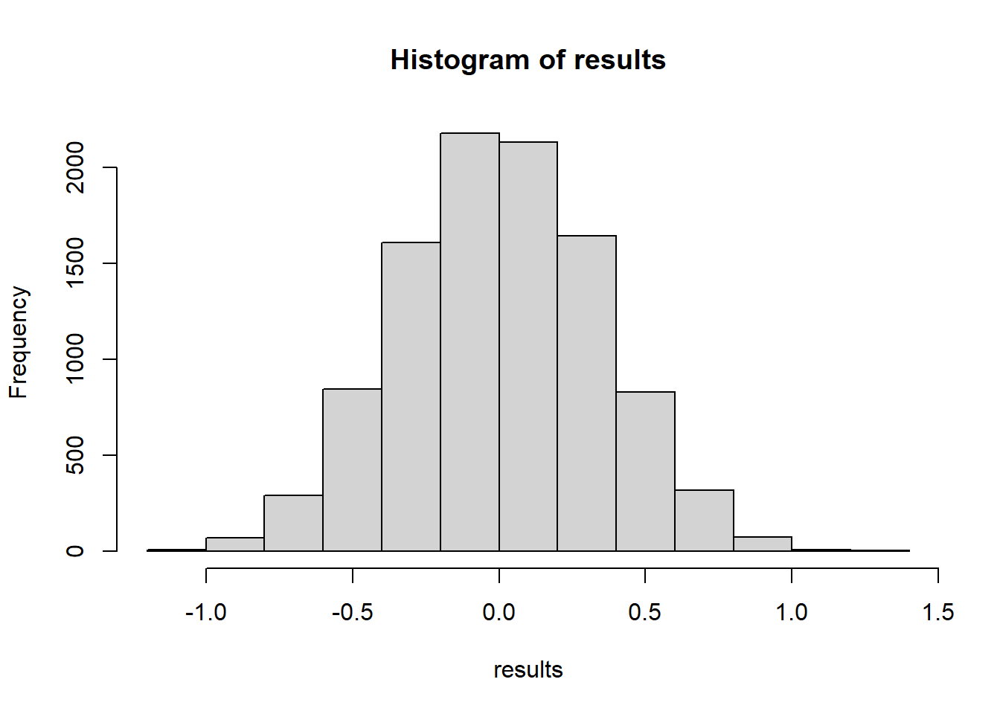
#Recall the alternative hypothesis:
# The drug works
# We only would consider evidence of this if the meanT-meanC >0
# So we only are going to calculate a p-value from the upper-tail
# of the distribution.
mean(results >= testStat(treatment, control))[1] 0.0442It might be interesting to check what a parametric T test would give us.
t.test(treatment, control, var.equal=TRUE, alternative="greater")
Two Sample t-test
data: treatment and control
t = 1.7437, df = 38, p-value = 0.04465
alternative hypothesis: true difference in means is greater than 0
95 percent confidence interval:
0.01928295 Inf
sample estimates:
mean of x mean of y
0.460 -0.122 Some other test statistics we could possibly use:
- difference of the medians
- difference of the max values
#Create a test_statistic function
testStat <- function(dataA, dataB){
return(max(dataA)-max(dataB))
}
permute_and_compute <- function( treatment, control ){
combinedData <- c(treatment, control)
shuffledData<- sample(combinedData)
treatmentSim <- shuffledData[1:length(treatment)]
controlSim <- shuffledData[-(1:length(treatment))]
return(testStat(treatmentSim, controlSim))
}
NMC <- 10000
results <- FALSE
for(i in 1:NMC){
results[i] <- permute_and_compute(treatment, control)
}
hist(results, breaks=50)
mean(results >= testStat(treatment, control))[1] 0.249What if we use a different test statistic? Let’s compare the medians.
testStat <- function(A,B){
return(median(A)-median(B))
}
#rerun comparing the sample medians
test_statistics <- 0
(Tobsd <- testStat(treatment, control))[1] 0.5for(i in 1:NMC ) {
test_statistics[i] <- permute_and_compute( treatment, control );
}
hist( test_statistics, breaks=60 )
abline( v=Tobsd, lw=3, col='red' )
sum(test_statistics >= Tobsd)/NMC[1] 0.0949Let’s use KS test statistics - the max deviance between their empirical distributions!=
what is that?
compare <- function(x, y) {
n <- length(x); m <- length(y)
w <- c(x, y)
o <- order(w)
z <- cumsum(ifelse(o <= n, m, -n))
i <- which.max(abs(z))
w[o[i]]
}
u<-compare(treatment, control) #this is where the max difference occurs
abs(mean(treatment < u) - mean(control < u))[1] 0.35ecdf1 <- ecdf(treatment)
ecdf2 <- ecdf(control)
plot(ecdf1, verticals=TRUE, do.points=FALSE, col="blue", main="Compare ecdfs")
plot(ecdf2, verticals=TRUE, do.points=FALSE, add=TRUE, col='red')
lines(c(u,u), c(ecdf1(u), ecdf2(u)), lwd=2)
legend(x=min(control,treatment), y=1, legend=c("treatment","control"), col=c("blue","red"), lty=1, xjust=-1)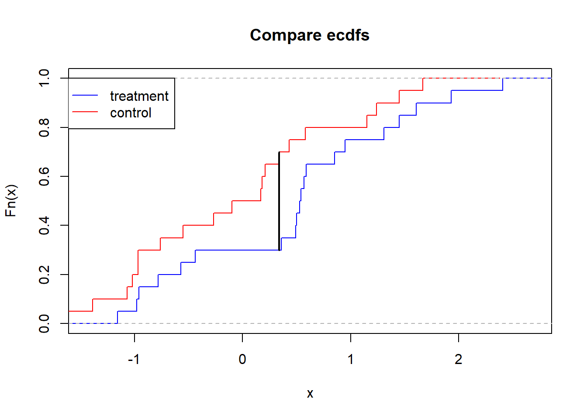
We can pull this out from the built-in ks.test function. The test statistic is the max deviance between the two empirical CDFs
testStat <- function(A,B){
return(as.numeric(ks.test(A,B)[1]))
}
testStat(treatment, control)[1] 0.4#rerun
(Tobsd <- testStat(treatment, control))[1] 0.4test_statistics <- rep( 0, NMC ); # Vector to store our "fake" test statistics
for(i in 1:NMC ) {
test_statistics[i] <- permute_and_compute( treatment, control );
}
hist( test_statistics )
abline( v=Tobsd, lw=3, col='red' )
sum(test_statistics >= Tobsd)/NMC[1] 0.0821We can spend all our time picking different test statistics, and maybe we find one that gives us a low p-value for this data set. But we have to be careful that it would generalize well to other datasets. Furthermore, we want to make sure that it would not be giving us false positives if we were comparing two populations that really did have the same distribution
Let’s demonstrate this comparing our 3 test statistics:
- difference of means
- difference of maximums
- difference of medians
- max ecdf deviation
And we can compare them over datasets that are generated from increasingly different populations.
generate_experiment <- function(nA, nB, effectSize){
#we will assume that the values in our data are drawn from a distribution -
#here we'll use a normal distribution. We could use permutation methods but
#that doesn't really change the point we're trying to make.
return(list(rnorm(nA, mean=effectSize, sd=1),
rnorm(nB, mean=0, sd=1)))
}
#for example
generate_experiment(20,20,.5)[[1]]
[1] 1.14210423 -0.03205957 0.82557421 -0.22970126 0.69222803 -0.04971073
[7] 0.12339363 -0.33214334 1.61048497 0.94078033 -0.22787996 -1.04021845
[13] -0.32305908 1.38665797 -0.44129337 2.51240507 1.27427885 2.38525221
[19] 0.22467590 0.21917225
[[2]]
[1] -0.94739967 -2.49238258 1.76135946 -0.88882364 0.59388380 0.07096781
[7] 1.40419070 0.57009621 0.19407728 -0.54706896 0.75325827 -0.04731243
[13] -0.71945015 -1.56398442 -2.68816161 1.73276146 0.72895625 0.66229371
[19] 0.05474118 -1.58360254nDatasets <- 200
NMC <- 200
set.seed(1)
effects <- seq(0,1,.1)
rr.mean <- 0; rr.max <- 0; rr.median <-0; rr.ks <- 0
for(k in 1:length(effects)){
effect <- effects[k]
rej.mean <- rep(FALSE,nDatasets)
rej.max <- rep(FALSE,nDatasets)
rej.median <- rep(FALSE,nDatasets)
rej.ks <- rep(FALSE,nDatasets)
#generate 100 different datasets
for(j in 1:nDatasets){
exp.data <- generate_experiment(20,20,effect)
obs.mean <- mean(exp.data[[1]])-mean(exp.data[[2]])
obs.median <- median(exp.data[[1]])-median(exp.data[[2]])
obs.max <- max(exp.data[[1]])-max(exp.data[[2]])
obs.ks <- as.numeric(ks.test(exp.data[[1]],exp.data[[2]])[1])
#permute and compute 1000 times
t.means <- 0
t.medians <- 0
t.maxes <- 0
t.kss <- 0
for(i in 1:NMC){
shuffledData <- sample(c(exp.data[[1]],exp.data[[2]]))
simA <- shuffledData[1:length(exp.data[[1]])]
simB <- shuffledData[-(1:length(exp.data[[1]]))]
t.means[i] <- mean(simA)-mean(simB)
t.medians[i] <- median(simA)-median(simB)
t.maxes[i] <- max(simA)-max(simB)
t.kss[i] <- as.numeric(ks.test(simA,simB)[1])
}
rej.mean[j] <- mean(t.means >= obs.mean) <=0.05
rej.median[j] <- mean(t.medians >= obs.median) <=0.05
rej.max[j] <- mean(t.maxes >= obs.max) <=0.05
rej.ks[j] <- mean(t.kss >= obs.ks) <=0.05
}
rr.mean[k] <- mean(rej.mean)
rr.max[k] <- mean(rej.max)
rr.median[k] <- mean(rej.median)
rr.ks[k] <- mean(rej.ks)
}
plot(x=effects, y=rr.mean, type="l", ylim=c(0,1), main="Rejection rate of different test statistics", xlab="effect size", ylab="rejection rate")
lines(x=effects, y=rr.max, col="red")
lines(x=effects, y=rr.median, col="blue")
lines(x=effects, y=rr.ks, col="darkgreen")
abline(h=.05)
legend(x=0, y=1, legend=c("means","medians","deviance","max"), col=c("black","blue","darkgreen","red"), lty=1)
17.7 Random number string
I want is the numbers 1 through 20 shuffled up. I ask both a computer and a person to provide me with this number string. Suppose I get the string, but I don’t know whether it came from the computer or the person.
from 2/20/2025 afternoon lecture 4 7 5 18 11 12 14 2 3 17 10 1 9 16 20 8 13 19 6 15
obs.Seq <- c(4,7,5,18,11,12,14,2,3,17,10,1,9,16,20,8,13,19,6,15)\(H_0:\) data generated truly randomly \(H_A:\) data generated by humans, not randomly, but attempted
Let’s use The number of values that are not in their original place
count_moved <- function(x) {
n <- length(x)
sum((1:n) == x)
}
t.sim <- replicate(10000, count_moved(sample(20)))
hist(t.sim)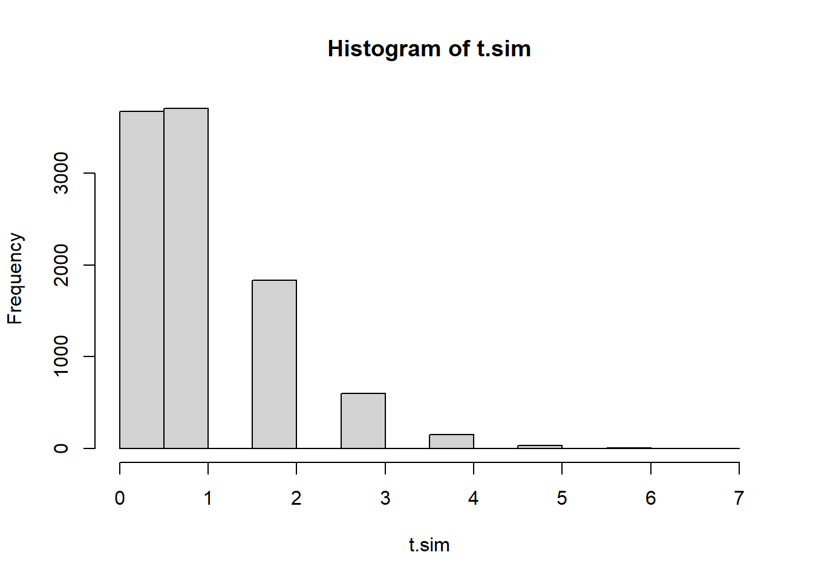
mean(t.sim >= count_moved(obs.Seq))[1] 119, 7, 5, 4, 13, 11, 2, 12, 3, 1, 15, 10, 18, 16, 9, 17, 20, 14, 6, 8
(generated 9/26: 1 6 18 12 15 19 20 5 2 17 11 3 9 16 4 7 8 10 13 14)
How can I use a permutation test to determine the likely source of this string of numbers???? Said more precisely, is there evidence that sequence came from a human (not a true randomizer). The idea here is that humans are actually not great at mentally randomizing. We put patterns into things subconsciously.
numbers.obs <- c(19, 7, 5, 4, 13, 11, 2, 12, 3, 1, 15, 10, 18, 16, 9, 17, 20, 14, 6, 8)
#We need a way to generate a random shuffling of the numbers
generate_numbers <- function(n.numbers){
return(sample(n.numbers))
}We also need some statistic or measurement of our data which indicates the weirdness of it. Let’s think about what wouldn’t be random.
1, 2, 3, 4, 5, 6, 7, 8, 9, 10, 11, 12, 13, 14, 15, 16, 17, 18, 19, 20
An increasing sequence of integers is very much not random. We can quantify this by counting how many differences are positive. In a random shuffling we would have some decreases and some increases. So let’s start with that statistic: The number of positive differences.
17.7.1 Mean Absolute deviation
We can look at the distance of each digit from where it “started” from. Rather than just averaging all of their deviations (which would have positive deviations cancelling out with negative deviations) we can look at absolute deviations (absolute values).
mean_abs_dev <- function(x){
n <- length(x)
return (mean(abs(x - 1:n)))
}
t.obs <- mean_abs_dev(obs.Seq)
set.seed(1)
mean.abs.dev.sim <- replicate(10000, mean_abs_dev(generate_numbers(20)))
hist(mean.abs.dev.sim)
abline(v=t.obs)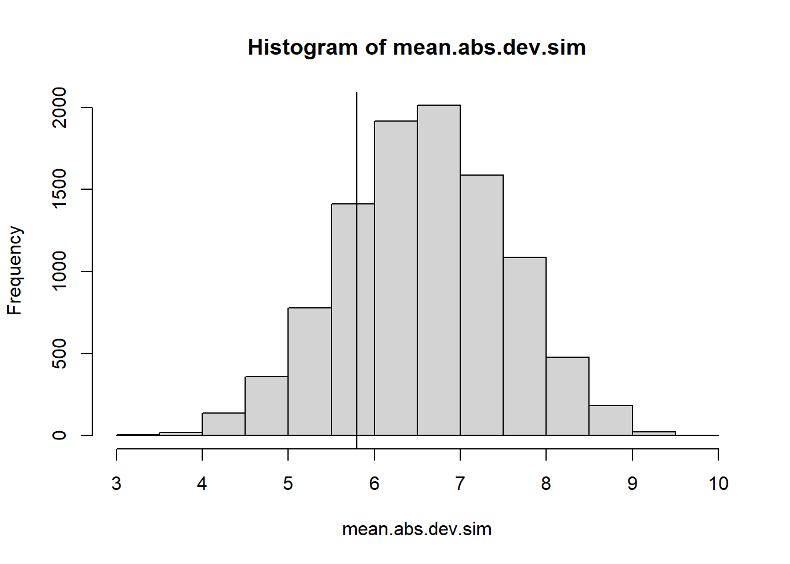
#2 tail p-value
2 * min(mean(mean.abs.dev.sim <= t.obs), mean(mean.abs.dev.sim >= t.obs))[1] 0.4122A two-tailed \(p\)-value of .354 is unconvincing; we have no evidence that this sequence of numbers wasn’t truly “randomly generated.”
17.7.2 Number of positive differences
In an ordered sequence the difference between every pair of consecitive digits is +1 or -1. We could count how many (out of n-1) of the differences are positive. If the number of positive differences is too high OR too low we would suspect non-randomness; this is a two-tailed test.
count_pos_diff <- function(numbers){
return(sum(diff(numbers)>0 ))
}
count_pos_diff(numbers.obs)[1] 7NMC <- 10000
set.seed(1)
t.posdiff <- 0
for(i in 1:NMC){
t.posdiff[i] <- count_pos_diff(generate_numbers(20))
}
hist(t.posdiff)
abline(v=count_pos_diff(numbers.obs))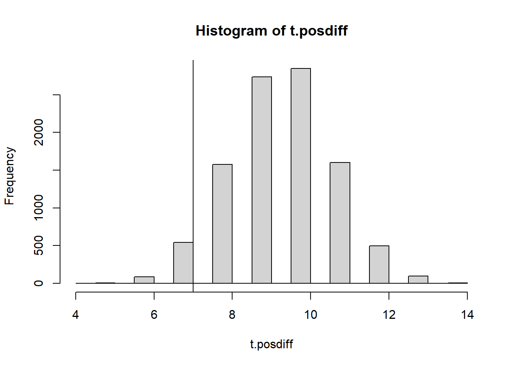
(p.val <- 2*min(
mean(t.posdiff <= count_pos_diff(numbers.obs)),
mean(t.posdiff >= count_pos_diff(numbers.obs))
))[1] 0.1278Drawback of this distribution we see is that it is discrete. I’m not a big fan of discrete distributions because they can be sensitive to just a single data value, and the p-value you get increases in big jumps as you move through the distribution.
If looking only at number of positive differences we don’t see an unusually large (or unusually small) number of positive difference. No evidence of randomness. However look at this dataset:
1, 3, 2, 5, 4, 7, 6, 9, 8, 11, 10, 13, 12, 15, 14, 17, 16, 19, 18, 20
count_pos_diff(c(1, 3, 2, 5, 4, 7, 6, 9, 8, 11, 10, 13, 12, 15, 14, 17, 16, 19, 18, 20))[1] 10plot(c(1, 3, 2, 5, 4, 7, 6, 9, 8, 11, 10, 13, 12, 15, 14, 17, 16, 19, 18, 20))
It’s very close to the middle of the distribution, but it’s a clear pattern. So the SIZE of the differences is clearly meaningful. We would want the differences to have the right amount of variation. If we take the differences of each consecutive pair of numbers, we can look at the standard deviation of those differences. That might be a good statistic to use.
17.7.3 Standard Deviation of Differences
Again note that this is a two-tailed test, because if the variation is too high or too low that would be evidence of non-randomness.
calc_sd_diff <- function(numbers){
return(sd(diff(numbers) ))
}
NMC <- 10000
set.seed(1)
t.sddiff <- 0
for(i in 1:NMC){
t.sddiff[i] <- calc_sd_diff(generate_numbers(20))
}
hist(t.sddiff)
abline(v=calc_sd_diff(numbers.obs))
2*min(mean(t.sddiff <= calc_sd_diff(numbers.obs)),
mean(t.sddiff >= calc_sd_diff(numbers.obs)))[1] 0.270217.7.4 Mean absolute difference
Another statistic we could look at is related to the absolute values of the differences - the average absolute difference. Again- this is a two-tailed test. Too high or too low would be evidence of nonrandomness.
calc_mean_abs_diff <- function(numbers){
return(mean(abs(diff(numbers))))
}
NMC <- 10000
t.meanabsdiff <- 0
for(i in 1:NMC){
t.meanabsdiff[i] <- calc_mean_abs_diff(generate_numbers(20))
}
hist(t.meanabsdiff, breaks = 50)
abline(v=calc_mean_abs_diff(numbers.obs))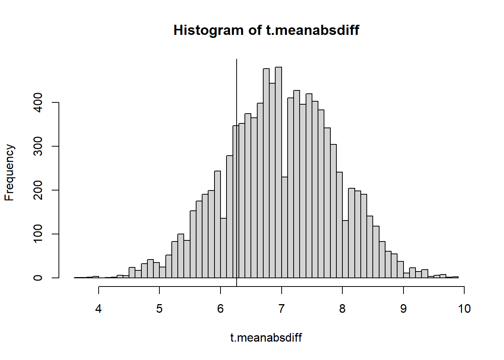
2*min(mean(t.meanabsdiff <= calc_mean_abs_diff(obs.Seq)),
mean(t.meanabsdiff >= calc_mean_abs_diff(obs.Seq)))[1] 0.9274No evidence of nonrandomness! We could be pretty satisfied that the string of integers was properly shuffled by a computer.
What about this one?
2 9 3 13 18 4 17 10 1 15 7 5 12 20 6 19 8 16 14 11
Do you think this was generated by computer or by human?
new.obs.data<- c(2,9,3,13,18,4,17,10,1,15,7,5,12,20,6,19,8,16,14,11)
#Mean absolute deviation
2*min(mean(mean.abs.dev.sim >= mean_abs_dev(new.obs.data)),
mean(mean.abs.dev.sim <= mean_abs_dev(new.obs.data))) [1] 0.3034#Positive Differences
2*min(mean(t.posdiff >= count_pos_diff(new.obs.data)),
mean(t.posdiff <= count_pos_diff(new.obs.data))) [1] 0.9904#SD Differences
2*min(mean(t.sddiff >= calc_sd_diff(new.obs.data)),
mean(t.sddiff <= calc_sd_diff(new.obs.data))) [1] 0.2834#Mean Abs Differences
2*min(mean(t.meanabsdiff >= calc_mean_abs_diff(new.obs.data)),
mean(t.meanabsdiff <= calc_mean_abs_diff(new.obs.data))) [1] 0.10417.7.5 Comparing The Test Statistics
I want to compare the power of the test statistics as the randomness of an array increases. In order to do this we would have to have a sense of an “effect size” and look at rejection rates as effect size increases - as the vector gets more and more shuffled.
A function that randomly chooses one value in an array and moves it to the first index can be used to incrementaly shuffle an array, so we can have some that are very unrandom, and very random. There are other ways to create gradually more “randomized” lists, but this is the one I’ll use.
popOnce <- function(x){
#pops a random element to the top of the list
ridx <- sample(length(x),1)
return(c(x[-ridx],x[ridx]))
}Then the shuffleN function takes the numbers in a vector x and calls the popOnce function n times.
shuffleN <- function(x,n=1){
for(i in 1:n){
x <- popOnce(x)
}
return(x)
}
maxPops <- 40
pops <- 1:maxPops
rr.madev <- rep(0, maxPops)
rr.pd <- rep(0,maxPops)
rr.sdd <- rep(0,maxPops)
rr.mad <- rep(0,maxPops)
NMC <- 5000
for(k in pops){
for(i in 1:NMC){
shuffledData <- shuffleN(1:20,k)
#Absolute Deviation
rr.madev[k] <- rr.madev[k] + (2*min(mean(mean.abs.dev.sim >= mean_abs_dev(shuffledData)),
mean(mean.abs.dev.sim <= mean_abs_dev(shuffledData))) <=0.05 )
#Positive Differences
rr.pd[k] <- rr.pd[k] + (2*min(mean(t.posdiff >= count_pos_diff(shuffledData)),
mean(t.posdiff <= count_pos_diff(shuffledData))) <=0.05 )
#SD Differences
rr.sdd[k] <- rr.sdd[k] + (2*min(mean(t.sddiff >= calc_sd_diff(shuffledData)),
mean(t.sddiff <= calc_sd_diff(shuffledData))) <= 0.05)
#Mean Abs Differences
rr.mad[k] <- rr.mad[k] + (2*min(mean(t.meanabsdiff >= calc_mean_abs_diff(shuffledData)),
mean(t.meanabsdiff <= calc_mean_abs_diff(shuffledData))) <=0.05)
}
}
plot(pops, rr.pd/NMC, type="l", col="darkgreen")
lines(pops, rr.sdd/NMC, col="blue")
lines(pops, rr.mad/NMC, col="red")
lines(pops, rr.madev/NMC, col="orange")
legend(col=c("darkgreen","blue","red", "orange"), x=maxPops*.65, y=1, legend=c("#posDiff","sdDiff","meanAbsDiff", "meanAbsDev"), lty=1)
abline(h=0.05, lty=2)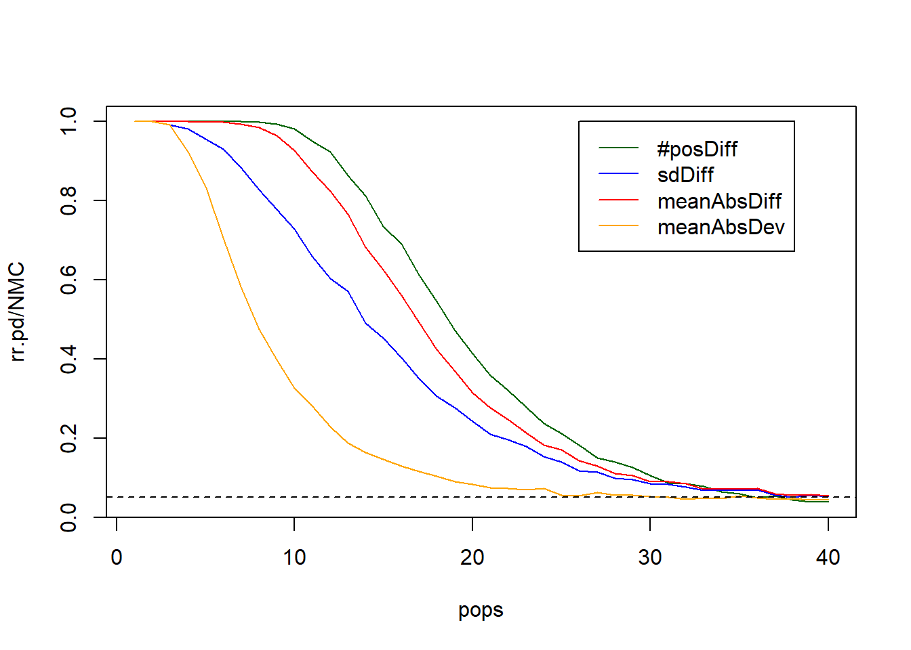
From this plot it seems that the number of positive differences in the sequence is the most powerful test statistic to detect a non-randomized list. BUt of course, this is only if “non-randomized” is measured in the way we’ve defined in terms of the “effect size”.
17.8 Random Visual Noise detection
Suppose we see an image on a monitor and want to determine if it is just random noise or if there is a pattern. Maybe this is data from a transmission from deep space. Is it just random noise, or is it possibly a message from an intelligent alien species?
For simplicity let’s say it is black/white pixels in a 16x16 grid:
obsData <- matrix(
c(0,0,0,1,1,1,0,1,1,1,0,1,1,0,0,1,
1,1,0,1,0,1,0,0,0,0,1,1,0,1,0,1,
0,0,1,1,0,1,0,1,1,0,1,1,0,1,0,1,
0,0,1,0,1,1,0,1,1,1,0,0,0,1,0,1,
1,1,1,1,0,1,1,1,0,1,1,1,1,0,0,1,
1,0,0,0,0,1,1,1,1,1,0,0,1,1,1,0,
1,0,1,0,1,0,0,0,1,1,0,0,0,1,0,1,
0,1,1,0,1,0,0,0,1,1,1,1,0,1,1,1,
0,0,1,1,1,1,1,0,0,0,1,0,1,1,1,0,
0,0,1,1,0,0,0,1,0,1,1,0,1,1,1,1,
0,1,1,1,1,1,1,0,1,1,1,1,1,0,1,1,
1,0,0,1,1,0,0,1,0,0,1,0,0,1,0,0,
0,1,0,1,1,1,1,1,0,1,1,0,1,1,0,0,
1,0,1,0,1,0,0,0,0,1,0,1,1,1,1,1,
1,0,0,0,0,1,0,0,1,0,0,0,0,1,1,0,
0,1,1,1,0,1,1,0,1,1,0,1,0,1,0,1),
nrow=16,byrow=TRUE)
par(pty="s")
require(raster)Loading required package: rasterLoading required package: spimage(obsData, useRaster=TRUE, axes=FALSE, col=c("black","white"))We want to devise a hypothesis test that will test for randomness. What can we use? Let’s look at some summary stats.
17.8.1 Test Stat 1: variability in number of 1s per region
Idea: Slice it into 4x4 chunks, and count the number of 1s, then calculate the standard deviation. If we have random noise data then we should have some variability in each of these 16 sub-squares.
sd_chunk_1s <- function(matrix){
#I will assume that the data is 16x16. This function is not going to
#generalize well to other sized inputs.
results <- numeric(0)
for(i in seq(1,15, 4)){
for(j in seq(1,15, 4)){
chunk <- matrix[i:(i+3), j:(j+3)]
results <- rbind(results, sum(chunk))
}
}
return(sd(results))
}
sd_chunk_1s(obsData)[1] 1.181454We can perform our permutation test, randomizing the grid and calculating the test statistic on each run.
#Permutation test
test.stat.sim <- 0
for(i in 1:1000){
test.stat.sim[i] <- sd_chunk_1s(matrix(data=sample(obsData), nrow=dim(obsData)[1], byrow=TRUE))
}
hist(test.stat.sim, breaks=25)
abline(v=sd_chunk_1s(obsData))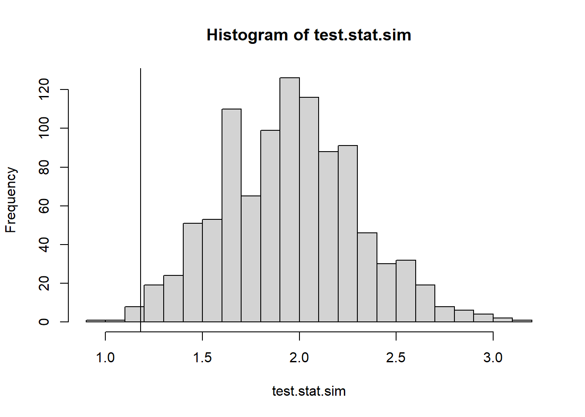
#two tailed test, ie if sd too low or too high that is unusual
2*min(mean(test.stat.sim <= sd_chunk_1s(obsData)),
mean(test.stat.sim >= sd_chunk_1s(obsData)))[1] 0.0217.8.2 Test Stat 2: Horizontal Symmetry
We can look at what proportion of pixels are the same as their mirror pixel. A fast way to calculate that is to compare the image with it’s flip, do a conditional comparison of values, and divide by 2.
calculate_horizontal_symmetry <- function(matrix){
nCols <- dim(matrix)[2]
matrix.flip <- matrix[,nCols:1]
return(sum(matrix==matrix.flip)/2)
}
NMC <- 10000
results <- 0
for(i in 1:NMC){
shuffledMatrix <- matrix(data=sample(obsData), nrow=dim(obsData)[1], byrow=TRUE)
results[i] <- calculate_horizontal_symmetry(shuffledMatrix)
}
hist(results)
abline(v=calculate_horizontal_symmetry(obsData))
calculate_horizontal_symmetry(obsData)[1] 6317.8.3 Test stat 3: Neighbor edges
Look at vertical neighbors (and horizontal neighbors)
A 00 edge will sum to 0 A 01 or 10 edge will sum to 1 A 11 edge will sum to 2
vEdges <- obsData[-1,]+obsData[-16,]
hEdges <- obsData[,-1]+obsData[,-16]
table(vEdges)vEdges
0 1 2
46 121 73 table(hEdges)hEdges
0 1 2
43 126 71 #Add two tables together!
table(vEdges)+table(hEdges)vEdges
0 1 2
89 247 144 #Let's let the BW edges be the test statistic to see how well it works:
count_bw_edges <- function(matrix){
dims <- dim(matrix)
vEdges <- matrix[-1,]+matrix[-dim(matrix)[1],]
hEdges <- matrix[,-1]+matrix[,-dim(matrix)[2]]
bwEdges <- as.numeric((table(factor(vEdges, levels=0:2))+
table(factor(hEdges, levels=0:2)))[2])
return(bwEdges)
}
count_bw_edges(obsData)[1] 247NMC <- 5000
results <- 0
for(i in 1:NMC){
shuffledMatrix <- matrix(data=sample(obsData), nrow=dim(obsData)[1], byrow=TRUE)
results[i] <- count_bw_edges(shuffledMatrix)
}
hist(results)
abline(v=count_bw_edges(obsData))
This test statistic doesn’t detect all kinds of non-randomness. Let’s see how well this test statistic does against some image that is definitely not random:
obsData2 <- matrix(rep(c(0,1),8*16),nrow=16, byrow=TRUE)
image(obsData2, useRaster=TRUE, axes=FALSE, col=c("black","white"))par(pty="s")
count_bw_edges(obsData2)[1] 240Or this one
obsData3 <- matrix(rep(c(rep(c(0,0,1,1),8),rep(c(1,1,0,0),8)),4), ncol=16, byrow=TRUE)
par(pty="s")
image(obsData3, useRaster=TRUE, axes=FALSE, col=c("black","white"))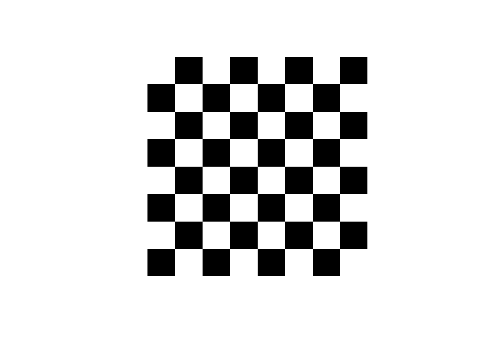
count_bw_edges(obsData3)[1] 224Let’s just create a function to automate the MC simulation
generateMCsim <- function(data, NMC){
results <- 0
for(i in 1:NMC){
shuffledMatrix <- matrix(data=sample(data), nrow=dim(data)[1], byrow=TRUE)
results[i] <- count_bw_edges(shuffledMatrix)
}
return(results)
}And now the Monte Carlo part.
mcDist <- generateMCsim(obsData2,5000)
hist(mcDist)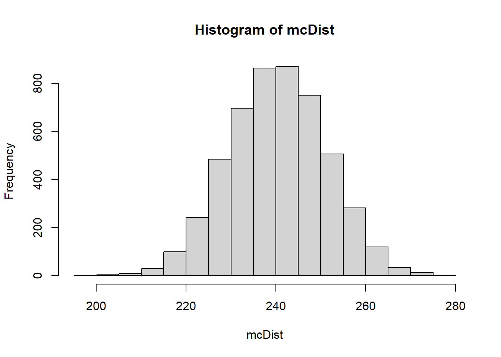
count_bw_edges(obsData2)[1] 24017.8.4 Test Stat 4: Moran’s I
We define neighbors to be cardinally adjacent. Moran’s index is a statistic that measures how correlated neighboring cells are
\[I = \frac{N}{W} \frac{\sum_{i=1}^N \sum_{j=1}^N w_{ij}(x_i-\bar{x})(x_j-\bar{x})}{\sum_{i=1}^N(x_i-\bar{x}^2)}\]
moranI <- function(matrix){
N <- prod(dim(matrix))
#The number of adjacencies is the product of the dimensions -1
W <- prod(dim(matrix)-1)
xbar <- mean(matrix)
nRow <- dim(matrix)[1]
nCol <- dim(matrix)[2]
I <- 2*(sum((matrix-xbar)[-1,]*(matrix-xbar)[-nRow,]) +
sum((matrix-xbar)[,-1]*(matrix-xbar)[,-nCol]) )/
sum((matrix-xbar)^2) * N/W
return(I)
}
t.sim <- replicate(NMC, moranI(matrix(data=sample(obsData), nrow=dim(obsData)[1], byrow=TRUE)))
t.obs <- moranI(obsData2)
hist(t.sim); abline(v=t.obs, col="red");
2*min( mean(t.sim>=t.obs), mean(t.sim<=t.obs))[1] 0.939217.8.5 Test Stat 5: Number of clumps
Let’s count the number of contiguous clumps
library(igraph)
library(raster)
nClumps <- function(matrix){
return(max(as.matrix(clump(raster(matrix), directions=4)), na.rm=TRUE))
}
nClumps(obsData) + nClumps(1-obsData)[1] 49Distribution of clump counts on data example 2
NMC <- 1000
results <- 0
for(i in 1:NMC){
shuffledMatrix <- matrix(data=sample(obsData2), nrow=dim(obsData2)[1], byrow=TRUE)
results[i] <- nClumps(shuffledMatrix) + nClumps(1-shuffledMatrix)
}
hist(results)
abline(v=nClumps(obsData2)+nClumps(1-obsData2))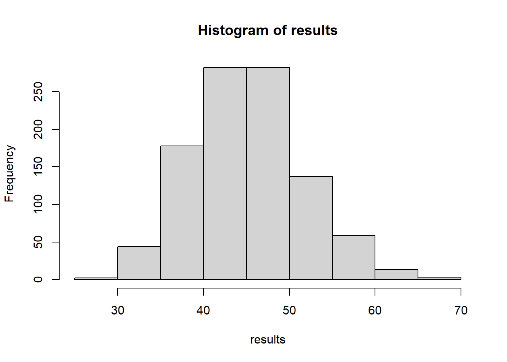
nClumps(obsData2)+nClumps(1-obsData2)[1] 16How does counting clumps work on the first dataset?
NMC <- 1000
results <- 0
for(i in 1:NMC){
shuffledMatrix <- matrix(data=sample(obsData), nrow=dim(obsData)[1], byrow=TRUE)
results[i] <- nClumps(shuffledMatrix)+nClumps(1-shuffledMatrix)
}
hist(results)
abline(v=nClumps(obsData)+nClumps(1-obsData))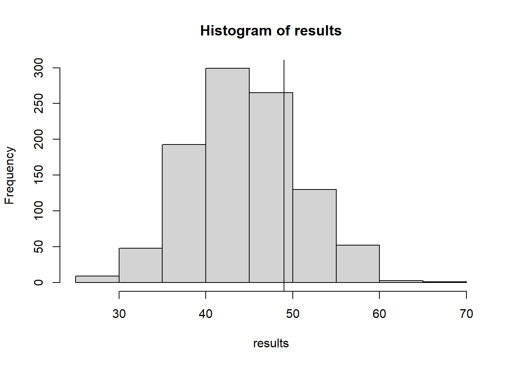
nClumps(obsData)+nClumps(1-obsData)[1] 4917.8.6 Test Stat 6: Variation in clump sizes
Perhaps the standard deviation of the clump sizes might be useful.
sdClumpSize <- function(matrix){
clumps1 <- as.vector(table(as.matrix(clump(raster(matrix), directions=4))))
clumps0 <- as.vector(table(as.matrix(clump(raster(1-matrix), directions=4))))
return(sd(c(clumps0,clumps1)))
}NMC <- 1000
results <- 0
for(i in 1:NMC){
shuffledMatrix <- matrix(data=sample(obsData), nrow=dim(obsData)[1], byrow=TRUE)
results[i] <- sdClumpSize(shuffledMatrix)
}
hist(results)
sdClumpSize(obsData)[1] 10.27186